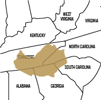
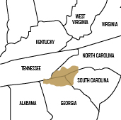
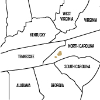

SPIRITS OF THE LAND
ALEX CENCI / Content Creator
For thousands of years, the Cherokee people have called the Southern Appalachian region home. But now, the last tribe residing in their ancestral homeland is the Eastern Band of Cherokee Indians. The members of the tribe are descendants from the 800 Cherokees who remained in the Appalachian region during the Trail of Tears.
“We’re very unique,” says Mike Crowe, a resident of the Qualla Boundary. “We’re not the only group to still be fortunate enough to be in our ancestral homeland, but it’s probably a very short list.”
After everything the Cherokee people endured, from continuous unfair treaties with colonists, to being forcibly removed from their land during the Trail of Tears, they have realized that upholding and passing on their traditions is the most important thing to keeping their culture alive.
-

BEFORE 1721
Original Cherokee Claims
The Cherokee people originally owned land that covered eight states. Kentucky, West Virginia, Virginia, and Alabama were used mostly as hunting grounds while North Carolina, South Carolina, Georgia, and Tennessee were used for village settlements. However, between 1721 and 1777, the Cherokees entered into ten different treaties with the colonists in order to maintain peace between them. They were required to cede about half of their land.
-

1785
End of Revolutionary War
In 1785, the Cherokees entered into the Treaty of Hopewell. Many of the colonists were ignoring the previous treaties so the new treaty had stricter regulations. It stated that the Cherokee land rights MUST be respected and that the Cherokees were allowed to fight and defend their land as long as they ceded more of their land, and worked to become “civilized” by becoming farmers and converting to Christianity.
-

1791
Final Cessions
Many of the colonists continued to disobey the new treaty. They would squat on land owned by the Cherokee people and fight off any efforts to protect the land. The Treaty of Holston was created in 1791 to soothe the conflicts by making the Cherokees give their land to the squatters in order to appease them. However, this only made the squatters realize they could invade the land with no punishment and eventually get it for themselves. This led to more treaties and more land cessions. Other events also led to more land cessions, such as Tennessee gaining statehood in 1796, and U.S. agents convincing some of the chiefs that it would be in their best interest to relinquish their land and move their people out West.
-

1819
Present Day
In 1819, the Cherokee signed a treaty where families were given land grants and citizenship in exchange for almost all the land in the Smoky Mountains. After that they resolved to give up no more of their land. They drafted a constitution to define their boundaries and announce themselves as a sovereign nation. But, the Indian Removal Act passed into law in 1830 and by 1838 thousands of Cherokees were forced from their homes to migrate to the West. However, the families who owned land and had citizenship were not forced to go and many others escaped the removal by hiding in the Smoky Mountains or by walking back from the West. They organized their own government and incorporated as the Eastern Band of Cherokee Indians.
CALLING A PLACE HOME
The Cherokee people residing in the Qualla Boundary call it home not only because it is their birthplace, but because it is where their family and ancestors have been for thousands of years.
“My home is in North Carolina with my people,” Peggy Hill, a member of the Qualla Boundary said. “It has never been anything else but home and it never will be anything else but home. Cherokee people, when they leave here, no matter how long they’re gone, they will call this home.”
The land itself is important to the people living on the boundary and being able to live in the region where their people originated is an enormous privilege.
>
PASSING THE TRADITION
The people of the Cherokee nation value the passing of their traditions, history, and culture to future generations. Up until the 1950s, the United States Government tried to force the Cherokee people to become “civilized” by living “American way.” They required all Cherokee children to attend boarding schools where they were not allowed to speak the Cherokee language and were forced to assimilate to the ways of the white Americans. Despite the pressure to conform to American lifestyles, the Cherokees uphold their culture by passing on the crafts, legends and traditions to ensure their way of life is never forgotten.
>
SHARING WITH THE WORLD
Today, the Eastern Band not only values the passing of their traditions to their own people, but to those who are willing to learn. The Warriors of AniKituhwa perform the traditional dances of the Cherokee people. The members of the group are also made Cultural Ambassadors and have the job of teaching other people their ways of life. They travel all over the world to teach people about their legends, culture and the Cherokee ways.
>
I would like to thank Joletta Crowe for letting me stay with her during my project. I would also like to thank Peggy Hill, Joanna Martin and Mike Crowe for allowing me to take the time to learn from them.